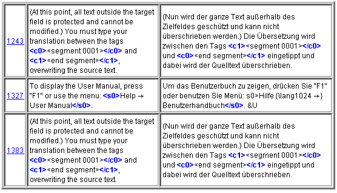

|
|
|
|
Ви будете використовувати вказані нижче діалогові вікна, щоб змінювати OmegaT і налаштування проекту. Усі вони описуються в окремих розділах. Нижче подана узагальнена інформація, навіщо вони використовуються та як їх відкрити:
|
|
|
|
|
|
|
|
|
|

Головне вікно складається з трьох панелей, головного меню й рядка стану. Ви можете змінити позицію кожної панелі або навіть зробити її окремим вікном, перетягнувши панель за заголовок. Відповідно до статусу панелі, у правому верхньому куті можуть зʼявитися різні символи:
 згортає панель, так що залишається лише рядок з назвою нижче рядка стану
згортає панель, так що залишається лише рядок з назвою нижче рядка стану
 розгортає панель на увесь простір вікна
розгортає панель на увесь простір вікна
 повертає панель на місце, де вона знаходилась перед згортанням та розгортанням.
повертає панель на місце, де вона знаходилась перед згортанням та розгортанням.
 відділяє панель від головного вікна в окреме вікно.
відділяє панель від головного вікна в окреме вікно.
 повертає панель назад до головного вікна.
повертає панель назад до головного вікна.
Також можна розмістити панелі так, що вони перекриватимуть одна одну. В цьому випадку вгорі панелі буде показана вкладка. Натиснувши на вкладці, панель „виходить“ на передній план. Щоб налаштувати розмір вікна, можна потягнути за розділювачі між панелями.
Тут Ви будете друкувати й редагувати переклад. Панель редагування показує текст частково перекладеного документа: перекладений текст відображається перекладом, неперекладений текст залишається мовою оригінала. Показаний текст ділиться на сегменти й Ви можете пролистувати документ і двічі натиснути на будь-який сегмент, щоб редагувати його. У наведеному прикладі вище перекладені сегменти виділяються жовтим. Ви можете змінити ці налаштування в пункті меню Вигляд.
Один із сегментів — активний сегмент. Лише цей сегмент складається з двох частин: верхня частина — це текст оригінала, виділений жирним шрифтом на зеленому фоні, нижня частина — поле редагування, обмежене двома маркерами: зліва маркер
<сегмент nnnn> де nnnn — це номер сегмента в проекті, правий маркер — <кінець сегмента>. Наведена вище частина служить як текст оригінала, і Ви переписуєте або змінюєте вміст поля редагування своїм перекладом.
Залежно від Налаштувань редагування поле редагування неперекладеного сегмента може бути пустим, містити текст оригінала або найкращий варіант перекладу рядка, який Ви збираєтеся перекладати. Коли Ви переходите до іншого сегмента, переклад підтверджується та зберігається. Якщо Ви хочете, щоб сегмент залишився неперекладеним, залиште його пустим, прибравши ввесь текст (для цього виділіть текст комбінацією клавішCtrl+A та видаліть його, натиснувши Del). OmegaT може запамʼятати ідентичний з текстом оригінала переклад. Це корисно для документів, які містять торгові марки, імена або інші власні назви, а також сегменти третьою мовою, які не потрібно перекладати.
Для детальнішої інформації дивіться розділ Редагування перекладу.

Вікно збігів показує найбільш схожі сегменти з памʼяті перекладу, як із памʼяті перекладу Вашого проекту, так і з імпортованих файлів памʼяті перекладу попередніх проектів або отриманих від клієнта чи перекладацького агенства.
Коли Ви переходите до наступного сегмента, автоматично вибирається перший нечіткий збіг (той, який має найбільший відсоток збігу). Можна вибрати інший збіг, натиснувши Ctrl+2, 3, 4, або 5.. Звичайно, натиснувши Ctrl+5, нічого не відбудеться, якщо збігу #5 не існує.
Для вставки вибраного збігу у Ваш переклад,ї натисніть Ctrl+R, щоб замінити текст у полі перекладу цим збігом або Ctrl+I, щоб вставити переклад на місце курсора.
Відсоток збігу приблизно дорівнює загальній кількості слів у вихідному сегменті та відповідному сегменті памʼяті перекладу, поділеній на кількість слів у довшому сегменті. Вибраний нечіткий збіг виділяється жирним шрифтом, слова, відсутні в сегменті перекладу — синім, а слова, які знаходяться поряд з відсутніми — зеленим. У прикладі вище сегмент оригінала — Information about Java & OmegaT. Найкращий збіг — 75%, тому що 3 слова з 4 збігаються (символ & ігнорується). У рядку відсотків збігу вказана також назва файлу, де був знайдений збіг. Якщо назви файлу немає, то це памʼять перекладу проекту за замовчуванням. „Нічиї“ сегменти (збіг #4) означають сегменти в памʼяті перекладу проекту, які не мають відповідного сегмента оригінала.
Вікно глосарія показує переклад термінів, знайдених у файлах глосарія. Воно показує переклад виразів, знайдених у поточному сегменті, але він показує її лише для довідкових цілей і не дозволяє вставити вираз або замінити його перекладом.

Сегмент оригінала в прикладі вище мав такий текст „In most translation jobs it is considered important to have the translated document look similar to the original.“, і два слова, document і translation, були знайдені у файлі глосарія. OmegaT також підтримує багатослівні терміни, але лише в дуже простій формі: якщо в поточному сегменті зустрічаються обидва слова одного терміна, цей термін буде відображатися.
Очевидно, Ви можете використовувати головне меню для доступу до всіх функцій OmegaT. Повний опис функцій меню дивіться в додатку Головне меню. Найчастіше використовуваними функціями можна керувати за допомогою комбінацій клавіш, тому, коли Ви їх запамʼятаєте, Вам більше не потрібно буде під час перекладу відкривати головне меню.
У рядку стану в нижній частині головного вікна відображаються повідомлення, повʼязані з робочим процесом. Цей рядок інформує користувача про конкретні операції, що виконуються. Крім того, він також показує кількість нечітких збігів та збігів у глосарії для поточного сегмента.
У вікні файлів проекту перераховані файли проекту та інша інформація про проект. Воно відображається автоматично, коли OmegaT завантажує проект. Щоб закрити його, натисніть esc; щоб відкрити його або перемістити на передній план, використайте комбінацію Ctrl+L.
Відображається наступна інформація.
список всіх файлів для перекладу в проекті. Це файли оригінала у каталозі „source“, які OmegaT може обробляти. Натискаючи на будь-який файл, зʼявляється текст для перекладу.
файл, відкритий зараз у вікні редагування, виділений синім кольором.
кількість сегментів у кожному файлі відображається поряд з назвою файлу.
кількість унікальних сегментів у всьому проекті.
кількість уже перекладених унікальних сегментів. Це число оновлюється щоразу, коли Ви перекладаєте новий сегмент.
Кількість унікальних сегментів вираховується шляхом вилучення із загальної кількості сегментів усіх сегментів, які повторюються, навіть зважаючи на регістр (наприклад, „Запуск“ і „запуск“ вважаються різними).
Різниця між „кількість сегментів“ і „кількість унікальних сегментів“ дає Вам уявлення про кількість повторень у тексті. Ці цифри, однак, не говорять про те, наскільки релевантними є повторення: це можуть бути відносно довгі речення, які повторюються багато разів (вдало!) або це може бути таблиця ключових слів (не дуже вдало...). Файл project_stats.txt в каталозі / omegat вашого проекту містить більш детальну інформацію про сегменти для кожного файлу.
Ви можете змінювати кількість сегментів / унікальних сегментів, змінюючи правила сегментації. Але цього варто уникати після початку перекладу в проекті. Для детальнішої інформації дивіться Правила сегментації.
Ви можете додати файли оригінала до проекту, натиснувши кнопку „Імпортувати файли оригінала...“. Вибрані файли будуть скопійовані в каталог /source, і проект перезапуститься для завантаження нових файлів. Ви також можете додати файли оригінала з веб-сторінок, написаних на MediaWiki, натиснувши кнопку „Імпортувати з MediaWiki“ та ввівши відповідну URL-адресу.
Ви будете використовувати „вікна пошуку“ для пошуку певних сегментів у проекті. Одночасно можна відкрити кілька пошукових вікон. Використайте комбінацію CTRL+F у головному вікні, щоб відкрити нове вікно пошуку. Це вікно складається з текстового поля для введення термінів або ключових слів, перемикачів налаштувань пошуку і поле для відображення результатів пошуку.
Він здійснюється як у тексті оригінала, так і в перекладі. Ви також можете шукати в будь-якому каталозі, але не забувайте, що OmegaT може шукати лише в підтримуваних файлах.
Пошук підтримує використання шаблонів * і ?, а також регулярні вирази.
Натискання кнопки пошуку після введення рядка у поле пошуку відобразить усі сегменти в проекті, які містять шуканий рядок. Оскільки OmegaT вважає всі однакові сегменти одним цілим, то відображається лише перший унікальний сегмент. Сегменти відображаються в порядку їх появи у проекті. Перекладені сегменти відображаються з текстом оригінала згори та перекладеним текстом знизу, неперекладені сегменти містять лише текст оригінала.
Ви можете натиснути на будь-який сегмент, щоб відкрити його в редакторі. Потім Ви можете повернутися до вікна пошуку та перейти до наступного знайденого сегмента, щоб змінити й його. Такий метод корисний для оновлення термінології.
Вікно перевірки тегів виявляє помилки тегів у перекладі та перераховує їх. Щоб відкрити вікно, натисніть Ctrl+T. Вікно містить таблицю з 3 стовпцями з посиланням на початковий сегмент, його текстом оригінала і текстом перекладу.

Теги виділені жирним шрифтом і синім кольором для зручного порівняння вмісту оригінала та перекладу. Натисніть на посилання, щоб перейти до сегмента у вікні редагування. Якщо необхідно, виправте помилку та натисніть CTRL+T, щоб повернутися на екран перевірки тегів виправлення інших помилок. У першому і третьому випадку вище теги повʼязані неправильно, а у другому випадку в початкового тега відсутній символ <.
Помилки тегів виникають під час змін тегів у перекладі, внаслідок чого порядок і кількість тегів більше не відповідають оригіналу. Деякі зміни тегів необхідні та доброякісні, деякі призводять до проблем при створенні перекладеного документа. Теги, зазвичай, є своєрідним форматуванням в тексті оригінала. Спрощуючи форматування текстів оригінала Ви можете значно зменшити кількість тегів.
Систему допомоги (яка відображає цей посібник) можна відкрити, натиснувши F1 або вибравши в головному меню Довідка → Посібник користувача....
У вікні Ви побачите посібник і дві кнопки: Назад і Зміст. Посібник користувача — це документ HTML із посиланнями на різні розділи. Натиснувши на посилання, як у Інтернет-браузері, відкривається потрібна сторінка.
Посібники користувача розташовані в підкаталозі doc каталогу встановлення OmegaT. Ви можете, наприклад, переглянути англійську документацію, відкривши файл doc/en/index.html у вашому браузері. Таким чином, Ви також можете переходити на зовнішні посилання, оскільки вбудований браузер допомоги не опрацьовує зовнішні інтернет-посилання.
| Юридична інформація | Домашня сторінка | Карта змісту |